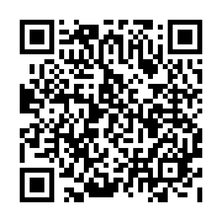

Tamil Cultural Association, IIT Bombay
Tamil Fest 2022 - Tickets
April 16, 2022 - LT PCSA, IIT Bombay
Coupon Code: vsd6a1dnfs
Name: Hiranmai Mohan
Mobile Number: 9940686017
Mail Id: 200110046@iitb.ac.in
Category: Student/Proj. Staff
Type: Only for Tamizh Fest 2022
Coupon (Self): 1
Coupon (Guest):
Tot. Coupons: 1
Dinner Slot: 8:30 pm
Contribution:
Total Paid: 310
